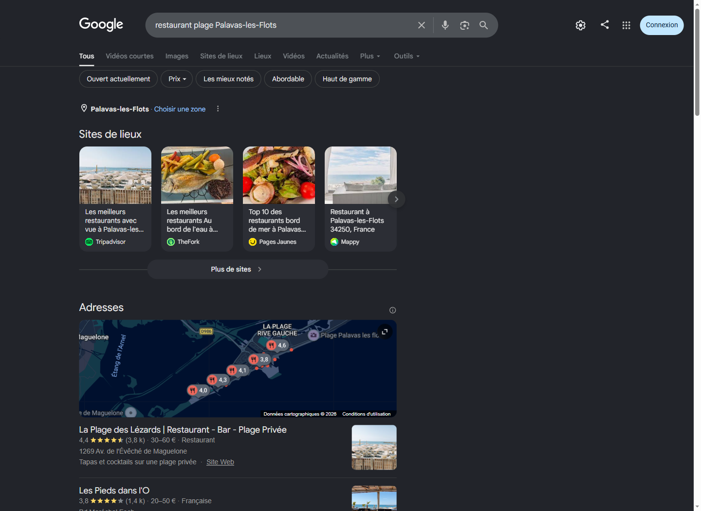
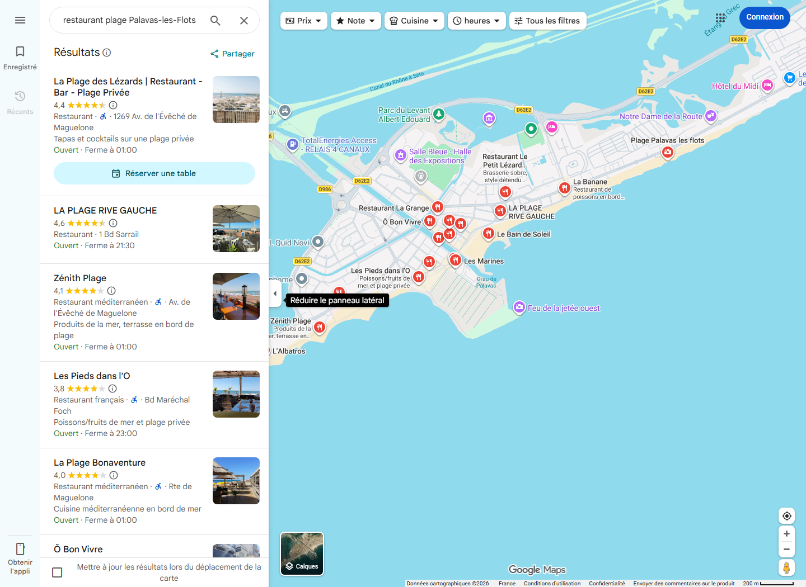
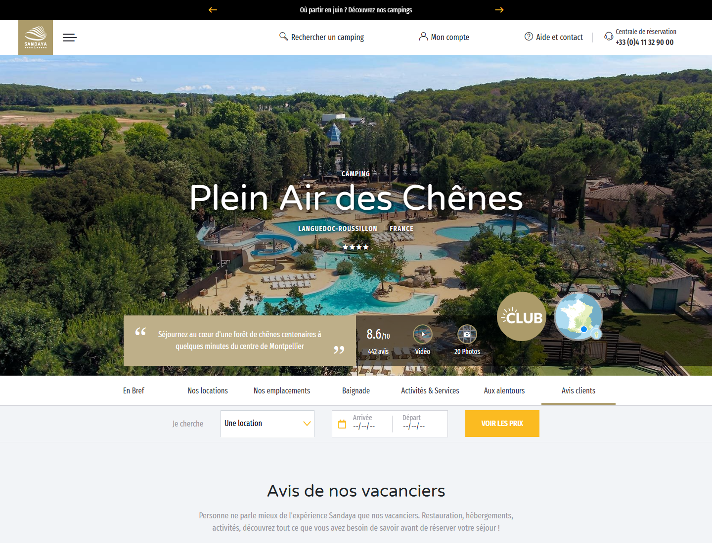
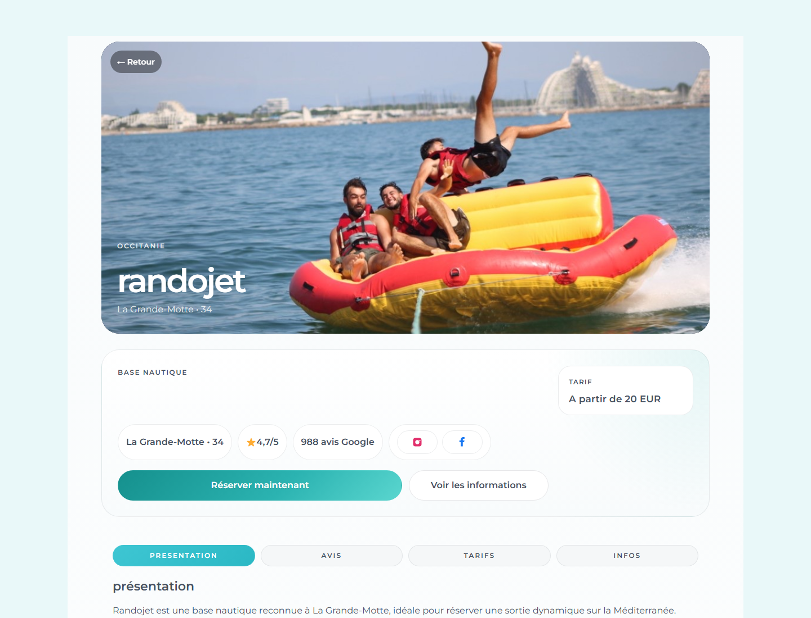

Vision Locale Tourisme
Guide gratuit 2026
Le Guide 2026 de la Visibilite Locale Touristique
Pour campings, activites nautiques et professionnels du tourisme local qui veulent rendre leur fiche Google plus rassurante avant la haute saison.
Avant de commencer
Un touriste ne choisit pas seulement avec votre site web. Il compare aussi votre fiche Google, vos avis, vos photos, vos horaires, vos reponses et votre facilite de contact.
Cette comparaison est souvent rapide. Une famille qui cherche un camping, un couple qui veut reserver une sortie en mer ou un groupe d'amis qui hesite entre deux bases nautiques ne va pas lire toute votre communication. Ils cherchent des preuves simples : est-ce ouvert, est-ce fiable, est-ce bien note, est-ce facile de reserver, est-ce que les autres voyageurs ont ete satisfaits ?
Ce guide vous aide a identifier les points simples qui peuvent renforcer la confiance avant la saison. L'objectif n'est pas de devenir expert marketing, mais de rendre votre presence locale plus claire, plus recente et plus rassurante.
1. Pourquoi la visibilite locale compte autant
Avant de reserver, beaucoup de voyageurs cherchent une option proche, fiable et simple a contacter. Ils regardent souvent Google Maps avant de visiter un site web.
- Une note correcte.
- Des avis recents.
- Des reponses du proprietaire.
- Des photos actuelles.
- Des horaires exacts.
- Une description claire.
- Des informations pratiques faciles a trouver.
Une fiche Google ne remplace pas votre accueil, mais elle prepare la decision. Si elle semble abandonnee, incomplete ou froide, le voyageur peut choisir un concurrent.
Pour une activite touristique, la visibilite locale est particulierement importante car le client est souvent dans une logique d'urgence douce : il est deja sur place, il organise sa journee, il veut une reponse claire et il compare plusieurs options dans la meme zone. Une fiche bien tenue peut donc faire la difference entre une simple impression et une demande de reservation.
2. Comment un touriste compare plusieurs etablissements
Un client en vacances decide souvent vite. Il compare la distance, la note, le nombre d'avis, la recence des avis, les photos, les indications de reservation, les langues disponibles et le ton des reponses.
Pour un camping, une base nautique ou un loueur de bateaux, la fiche Google doit repondre aux questions simples avant meme le premier contact.
Questions pratiques
Ou est-ce situe ? Peut-on se garer ? Quels sont les horaires ? Comment reserver ? Est-ce adapte aux enfants ? Faut-il prevoir quelque chose ?
Questions de confiance
Les clients recents sont-ils contents ? Les avis negatifs sont-ils traites ? Les photos correspondent-elles a la realite ? L'etablissement semble-t-il actif ?
Votre objectif est de reduire l'incertitude. Plus les reponses sont visibles, moins le voyageur a besoin d'hesiter ou d'appeler un concurrent.
Exemple observe : la decision commence dans Google

Cette page montre pourquoi la fiche Google est un actif commercial. Le voyageur n'arrive pas toujours sur votre site en premier. Il voit d'abord une liste d'options avec des signaux tres rapides : note, nombre d'avis, localisation, photos, prix indicatif, categorie et lien vers le site.
Dans cet environnement, un ecart de perception peut peser lourd. Une note plus basse, un volume d'avis plus faible, une photo moins claire ou une fiche moins complete peuvent faire perdre le clic avant meme que le client ait lu votre offre.
A regarder sur votre propre recherche Google
Tapez votre activite comme un voyageur : "camping + ville", "location bateau + ville", "restaurant plage + ville". Notez si votre etablissement ressort, si vos photos donnent envie, si vos avis sont visibles et si vos concurrents semblent plus rassurants.
Exemple observe : Google Maps met les concurrents cote a cote

Sur Google Maps, la comparaison est encore plus directe. Les etablissements apparaissent dans une liste et sur la carte. Le voyageur peut passer d'une option a l'autre en quelques secondes, sans lire de long contenu.
Les notes ne sont pas le seul element visible. Les photos, les horaires, la mention "ouvert", les boutons de reservation, la distance et les categories jouent aussi. Mais les avis restent l'un des premiers signaux regardes, surtout quand plusieurs options se ressemblent.
A retenir
Votre vraie concurrence locale n'est pas abstraite. Elle est affichee a quelques centimetres de votre fiche, avec ses notes et ses photos. Votre objectif est d'etre au moins aussi clair, recent et rassurant que les options autour de vous.
Exemple observe : un camping qui rassure vite

Ce type de presentation fonctionne parce que plusieurs signaux de confiance sont visibles sans effort : une photo immersive, une note mise en avant, un volume d'avis, des onglets utiles, un bouton prix/reservation et une phrase qui situe clairement l'experience.
Le point important n'est pas de copier la page. Le point important est de comprendre la logique : un voyageur doit percevoir en quelques secondes ou il va, ce qu'il peut vivre, et pourquoi l'etablissement semble fiable.
A retenir
Une bonne visibilite locale combine trois choses : preuve sociale, informations pratiques et invitation claire a passer a l'action.
3. Les erreurs qui font perdre confiance
- Avis negatifs sans reponse.
- Avis positifs jamais remercies.
- Photos anciennes ou peu attractives.
- Horaires non mis a jour.
- Absence d'informations sur parking, acces, langues ou reservation.
- Description trop generique.
- Aucun post recent sur la fiche Google.
- Questions clients laissees sans reponse.
Le probleme n'est pas seulement l'image. Chaque friction peut faire perdre une demande.
Un avis negatif sans reponse, par exemple, ne montre pas seulement qu'un client a ete decu. Il peut donner l'impression que l'etablissement ne suit pas sa reputation ou ne prend pas le temps de rassurer. A l'inverse, une reponse calme et professionnelle peut limiter l'impact d'un mauvais avis, surtout si elle montre que l'equipe ecoute et corrige.
La meme logique vaut pour les photos. Si les images datent de plusieurs saisons, si elles ne montrent pas les espaces importants ou si elles ne correspondent pas aux questions des voyageurs, la fiche perd en pouvoir de conversion. Une photo claire de l'acces, de l'accueil, de l'activite, des equipements ou du cadre peut parfois repondre a plus de questions qu'un long texte.
4. Obtenir plus d'avis sans enfreindre les regles
La bonne approche consiste a demander un avis authentique apres une vraie experience client.
A eviter
- Acheter des avis.
- Offrir une recompense contre un avis.
- Demander uniquement aux clients satisfaits de publier sur Google.
- Rediriger les clients mecontents vers un formulaire prive pour eviter un avis public.
Bonne pratique
- Demander simplement un retour honnete.
- Envoyer le lien au bon moment.
- Faciliter la demarche.
- Ne jamais dicter le contenu de l'avis.
Bonjour, merci pour votre visite. Si vous avez apprecie votre experience, votre avis aide beaucoup les prochains voyageurs a nous decouvrir. Vous pouvez laisser un retour ici : [lien Google]
Le meilleur moment pour demander un avis est souvent juste apres l'experience, quand le souvenir est frais : apres le depart d'un client satisfait, apres une sortie nautique reussie, ou dans un message de remerciement envoye le lendemain. Plus la demande est simple, plus elle a de chances d'etre faite.
Il ne faut pas chercher a obtenir uniquement des avis parfaits. Une reputation credible contient parfois des critiques. Ce qui compte, c'est le volume, la recence, la qualite des reponses et la coherence entre les avis et l'experience reelle.
5. Repondre aux avis positifs
Un avis positif merite plus qu'un simple "merci". Une bonne reponse renforce la confiance des futurs clients.
- Remercier.
- Reprendre un detail de l'experience.
- Mentionner la saison ou le lieu.
- Inviter a revenir.
Bonjour [prenom], merci beaucoup pour votre avis. Nous sommes ravis que vous ayez apprecie [detail]. Toute l'equipe sera heureuse de vous accueillir a nouveau lors de votre prochain passage pres de [lieu].
Une reponse personnalisee donne aussi de la matiere aux futurs clients. Si un avis mentionne l'accueil, la proprete, l'activite avec enfants ou le calme, votre reponse peut reprendre ce point sans en faire trop. Vous transformez alors un simple avis en mini preuve commerciale.
Evitez les reponses identiques copiees-collees. Elles donnent une impression mecanique. Il vaut mieux une reponse courte mais contextualisee qu'un long message generique.
6. Repondre aux avis negatifs
Une reponse a un avis negatif ne sert pas seulement a parler au client mecontent. Elle parle surtout aux futurs clients qui lisent l'echange.
- Rester calme.
- Ne pas accuser le client.
- Reconnaitre le ressenti.
- Donner un element factuel si necessaire.
- Proposer un contact direct.
Bonjour [prenom], merci d'avoir pris le temps de partager votre retour. Nous sommes desoles que votre experience n'ait pas ete a la hauteur de vos attentes. Votre remarque a ete transmise a l'equipe afin d'ameliorer ce point. Vous pouvez nous contacter directement a [contact] pour en discuter plus precisement.
Le piege classique est de vouloir se defendre point par point. Parfois c'est necessaire, mais le ton compte plus que la victoire. Un futur client ne cherche pas a savoir qui a raison dans un conflit. Il regarde si l'etablissement semble professionnel, maitrise et capable de traiter un probleme.
Quand l'avis est injuste ou incomplet, vous pouvez apporter un contexte factuel, mais gardez une phrase d'ouverture empathique. Cela montre que vous prenez le sujet au serieux sans entrer dans une dispute publique.
7. Gerer les avis en plusieurs langues
Autour du littoral, les voyageurs peuvent s'exprimer en francais, anglais, allemand, neerlandais, espagnol ou italien.
Repondre dans la langue du client, quand c'est possible, montre que l'etablissement est habitue a recevoir une clientele internationale. Le ton doit rester simple, clair et naturel.
Vous n'avez pas besoin de faire de longues reponses. Une structure simple suffit : remercier, reprendre le detail positif ou le probleme, et conclure clairement. Pour les langues que vous ne maitrisez pas, mieux vaut utiliser une traduction relue et naturelle qu'un texte approximatif qui donne une impression froide.
Hello [first name], thank you for your kind review. We are happy you enjoyed [detail]. We hope to welcome you again during your next stay near [place].
Hola [nombre], muchas gracias por su comentario. Nos alegra saber que disfruto de [detalle]. Sera un placer recibirle de nuevo en su proxima visita a [lugar].
Exemple observe : une activite nautique qui convertit vite

Pour une activite nautique, le client veut comprendre rapidement l'experience, le prix de depart, la localisation et la preuve que d'autres clients ont reserve avant lui. La capture montre une combinaison efficace : image forte, ville, categorie, note, nombre d'avis, bouton de reservation et bouton d'information.
Cette logique peut etre reprise sur une fiche Google : photos recentes de l'activite, categorie claire, lien de reservation, horaires a jour, reponses aux avis et informations pratiques sur l'acces.
A retenir
Quand le client est deja en vacances, la clarte gagne souvent contre la complexite. Une fiche qui repond vite peut obtenir la demande avant un concurrent mieux equipe mais moins lisible.
8. Preparer sa fiche Google avant la haute saison
La preparation doit commencer avant le pic de demandes. Attendre juillet ou aout oblige souvent a traiter la reputation dans l'urgence, au moment ou l'equipe est deja occupee par l'operationnel.
- Horaires verifies.
- Numero de telephone correct.
- Lien de reservation correct.
- Photos recentes ajoutees.
- Description relue.
- Services principaux visibles.
- Questions frequentes traitees.
- Avis recents obtenus.
- Avis sans reponse traites.
- Posts Google publies.
Une bonne routine consiste a verifier la fiche chaque semaine en saison : nouveaux avis, questions clients, horaires speciaux, photos a ajouter, posts a publier et concurrents proches qui progressent. Ce suivi peut etre court, mais il doit etre regulier.
9. Checklist visibilite locale
Utilisez cette checklist comme un audit rapide. Si plusieurs cases ne sont pas cochees, il y a probablement des reservations que vous pourriez mieux capter sans changer votre offre.
- Ma fiche Google donne envie en moins de 10 secondes.
- Mes 10 derniers avis ont une reponse.
- Mes photos montrent l'experience actuelle.
- Mes horaires sont exacts pour la saison.
- Mon lien de reservation fonctionne.
- Mes informations pratiques sont visibles.
- Je demande des avis de facon simple et conforme.
- Je sais comment repondre aux avis negatifs.
- Je compare ma fiche a 3 concurrents proches.
Le plus utile est de faire cet exercice comme un voyageur. Recherchez votre activite depuis un telephone, sans passer par votre site. Comparez-vous a trois concurrents. Notez ce qui rassure, ce qui manque et ce qui donne envie de cliquer.
10. Prochaine etape
Vous voulez savoir ce qu'un voyageur voit quand il compare votre etablissement a vos concurrents proches ?
Demandez votre mini-audit gratuit Vision Locale Tourisme.
Nous analysons votre fiche Google, vos avis, vos reponses, vos photos et quelques concurrents locaux pour identifier les ameliorations prioritaires avant la saison.
Sources et exemples publics consultes
Exemples visuels consultes : recherche Google et Google Maps pour "restaurant plage Palavas-les-Flots", Sandaya Plein Air des Chenes et Randojet La Grande-Motte.
Regles utiles : Google Business Profile - obtenir et repondre aux avis et Google Maps - contenus interdits et contenus soumis a restrictions.